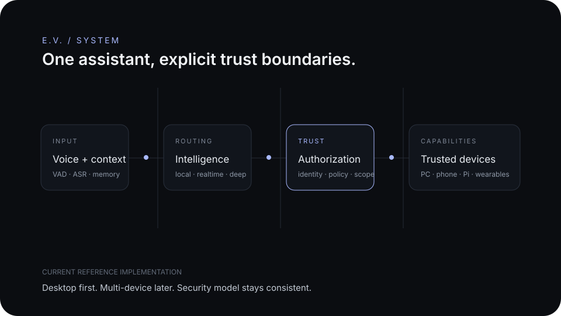

ONE AI.
EVERYWHERE.
A persistent, low-latency personal assistant designed to move with me across desktop, Android, a home server, and eventually wearable interfaces while keeping access deliberate and user-controlled.
Useful, persistent, controlled.
The goal is not another chat window. E.V. should understand context, work across authorized devices, and remain under the user's control.
Natural interaction
Natural wake, interruption, conversation, and resume behavior designed for low-friction use.
Persistent identity
Trusted continuity across sessions and devices with persistent identity and context.
Authorized workflows
Files, transfers, applications, settings, and routine tasks through explicit permissions.
Local first where useful
Keep sensitive operations close to the devices and use external services deliberately.
What works now.
These items are drawn from the current E.V. project documentation and desktop implementation, not the long-term concept.
Continuous microphone capture, local VAD, Whisper ASR, Piper TTS, wake handling, interruption, and barge-in.
Deterministic state, local Qwen3 8B, fast cloud/realtime, and deeper cloud reasoning with automatic tier routing.
Verified OS, CPU, GPU, memory, disk, process, network-listener, mount, and audio-device telemetry.
Search, copy, and move files; launch approved apps; open standard folders; and reveal explicit file paths.
Voice enrollment, random liveness challenges, authentication levels, centralized authorization, and protected-request resume.
Android, Raspberry Pi coordination, vision, and wearables remain expansion phases built on the desktop security model.

From voice to presence.
Status reflects broad capability stages and verified project progress.
Voice foundation
Real-time conversation, wake behavior, and interruption handling.
Working foundationDesktop agent
PC-side foundation for files, applications, and local workflows.
Working foundationAndroid identity + pairing
Persistent device identity, trusted peers, protected connections, and reliable reconnect behavior.
Active developmentCross-device files, chat + voice
One coherent experience across desktop and phone with explicit authorization.
Next major layerHome hub
Persistent services, storage, and local infrastructure independent of the main desktop.
PlannedWearable E.V.
Smart-glasses interface, navigation context, audio, and real-world assistance.
FutureE.V. Core: development services, testing costs, infrastructure, and small hardware needs while the cross-device foundation is built.
- Development and service costs
- Testing hardware and adapters
- Home-hub experiments
- Future mobile and wearable testing
E.V. should disappear into the workflow.
The best version is not something constantly demanding attention. It is simply there when needed, across the devices that already matter.